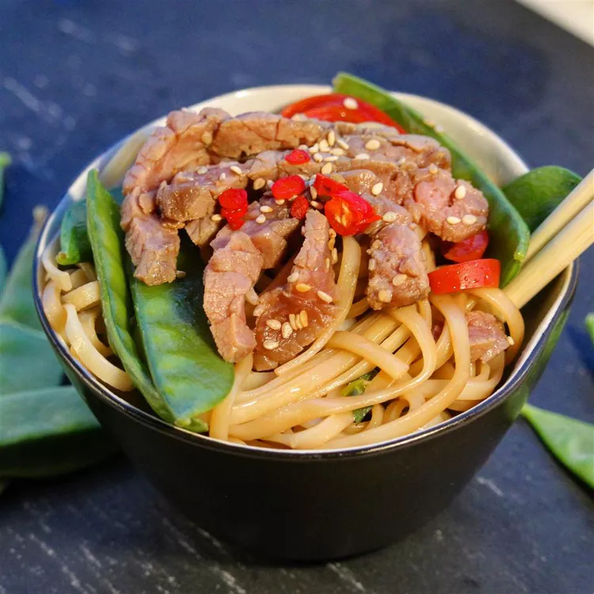

Homepage
Asian Steak & Noodle Bowl

Description
A delicious combination of Asian flavors infused in lean meat, vegetables,
and Japanese noodles. So comforting, you won't even know this was low-fat!
Ingredients
- Half cup of low-sodium soy sauce
- One third cup of vegetable oil
- One third cup of brown sugar
- A Tablespoon of minced ginger
- Half teaspoon of garlic powder
- 2 pounds of flank steak
- A pack(10 ounce) of dried Japanese udon noodles
- 6 ounce of snow peas
- A cup of broccoli florets
- A tablespoon of mirin(Japanese sweet wine)
Steps
-
Whisk soy sauce, vegetable oil, brown sugar, ginger, and garlic powder
together in a large bowl. Pierce flank steak several times with a large
fork. Place in the bowl and cover with plastic wrap. Let marinate in the
refrigerator, at least 4 hours and up to overnight.
-
Bring a large pot of salted water to a boil. Cook udon noodles in
boiling water, stirring occasionally, until tender yet firm to the bite,
13 to 14 minutes. Drain.
-
Heat a large skillet over high heat. Remove steak from marinade and cook
until well-browned, about 2 minutes per side. Reserve marinade.
-
Preheat grill for medium heat and lightly oil the grate. Grill steak,
basting with half of the reserved marinade, until internal temperature
reaches 140 degrees F (60 degrees C) for medium or 150 degrees F (65
degrees C) for medium-well, at least 10 minutes per side. Slice steak
thinly against the grain.
-
Combine remaining marinade, snow peas, broccoli florets, and mirin in
the skillet. Cook and stir over medium-high heat until snow peas are
tender, about 2 minutes. Add drained noodles; mix well to combine.
- Divide noodle mixture among large bowls. Top with steak slices.